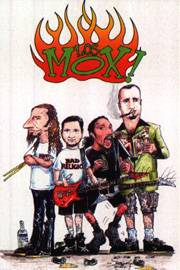

- 6 músicas (15 min) - |
|||||||||||||
|  |
|
||||||||||||
[] música ao vivo
características:
| qualidade de gravação | adesivo | letras das músicas |
| excelente | sim | sim |
|
|
comentários:
" segunda demo da banda que, após mudanças em sua formação, está mais madura. seu som está agora mais apurado e mais trabalhado, mas suas letras continuam contando as peripécias cômicas de seus integrantes. já contam com várias aparições em programas de rádio e TV do chile e ainda carregam a bandeira independente sem demonstrar qualquer sinal de fraqueza. "